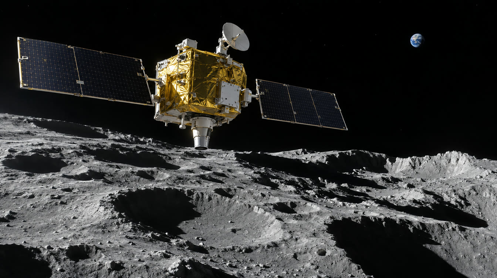
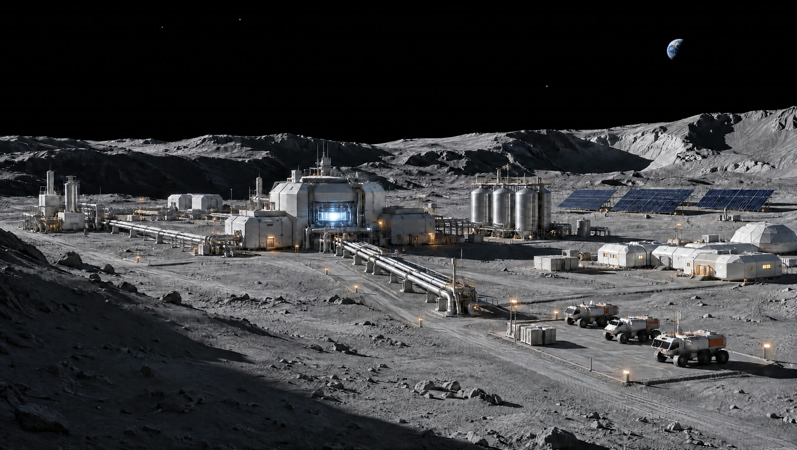
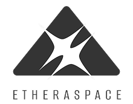
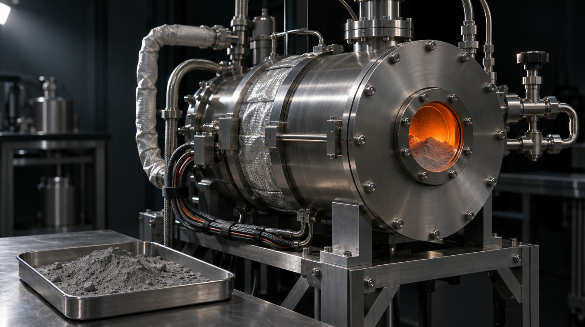
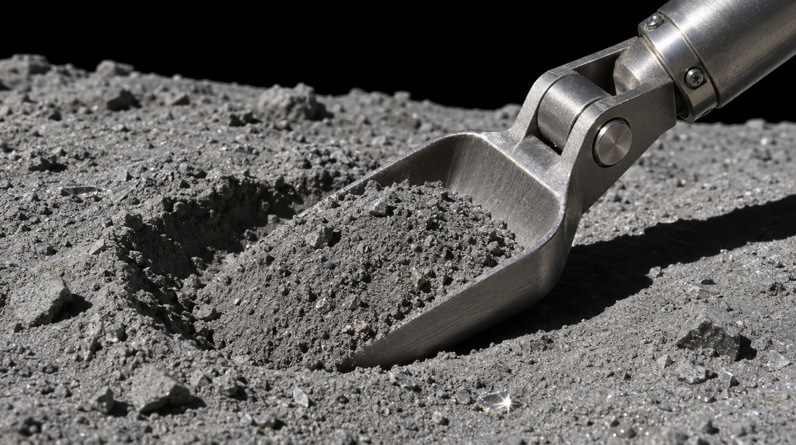

Картограф HELION-1 прошёл испытания
Орбитальный спектрометр выдержал вибрационные тесты и готовится к отправке на космодром.
Разведка и подготовка добычи гелия-3 у южного полюса Луны.
Южный полюс Луны.
На дно здешних кратеров не попадает солнечный свет. Температура там около −230 °C.
Гелия-3 на Земле почти нет.
Его получают по несколько килограммов в год. В лунном грунте он копился миллиарды лет.
Мы готовим его добычу.
Сначала разведка и опытная печь, потом комплекс, который работает без людей.
Опытный комплекс HELION.
Гребень между кратерами Шеклтон и де Жерлаш, 89,5° южной широты.
HELION готовит добычу гелия-3 у южного полюса Луны. Сейчас идёт разведка и испытания опытной печи.
До первой партии нужно пройти разведку и построить опытную установку. Компания основана в 2026 году. Сейчас мы собираем орбитальный картограф и испытываем печь на имитаторе лунного грунта. Промышленной добычи у нас пока нет.
Столько гелия-3 в лунном грунте по образцам «Аполлона». Это десять частей на миллиард.
Грунта нужно переработать ради одного грамма гелия-3.
Целевой год первой опытной партии для лабораторий на Земле.

Наведите курсор на атом или выберите вопрос.
Изотоп гелия с двумя протонами и одним нейтроном. Стабилен, не радиоактивен, на Земле его получают при распаде трития.
В реакции дейтерия с гелием-3 почти не образуется нейтронов, поэтому стенки реактора меньше облучаются. Но ей нужно около 600 миллионов градусов, и такого реактора пока никто не построил.
У Луны нет атмосферы и магнитного поля, поэтому частицы солнечного ветра долетают до поверхности и застревают в грунте. В образцах, которые привезли экипажи «Аполлонов», гелия-3 около десяти частей на миллиард.
Удерживайте кнопку, пока температура не дойдёт до 700 °C. Отпустите раньше, и камень остынет.
Из 100 тонн грунта вышел один грамм гелия-3. Вручную столько не перекопать, поэтому на площадке работают автоматы.
Шесть этапов. Выберите любой, и схема приблизится к оборудованию.
Орбитальный картограф и ровер ищут участки, где гелия-3 больше обычного.
Поверните модель и выберите объект. Показатели проектные.
Сюда харвестеры привозят грунт и здесь же заряжаются.
Глобус можно вращать и приближать. Рельеф нарисован условно, координаты объектов настоящие.
Нажмите на маркер на глобусе или на название в списке.
Снимаем слой до трёх метров и после печи укладываем грунт обратно.
Не работаем в зонах, важных для исследований, и открываем данные разведки учёным.
Воду и водород, которые выходят из грунта вместе с гелием, пускаем на топливо.
Соблюдаем Договор о космосе 1967 года и публикуем отчёт о каждой операции.
До первой партии гелия-3 по плану восемь лет. Экономика добычи и термоядерный реактор на гелии-3 пока не доказаны.
Орбитальное картирование и пробы грунта у южного полюса.
Нагрев и разделение газов прямо на поверхности.
Граммы гелия-3 для лабораторий на Земле.
Решение принимаем по итогам первых трёх этапов.


Орбитальный спектрометр выдержал вибрационные тесты и готовится к отправке на космодром.

Опытная установка отработала на имитаторе лунного грунта без остановок.

Аико Танака собрала опубликованные измерения и перечислила, каких данных не хватает.
Запросите презентацию проекта. Мы ответим на указанный адрес.